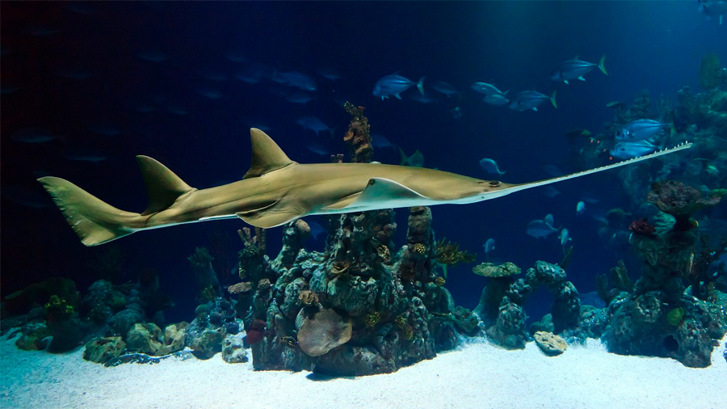

Tiburón Sierra
Su longitud puede llegar a más de 3,5 metros. Tiene un apéndice rostral largo estrecho que va aguzándose progresivamente (la longitud del rostrum es de 27% - 29% de la longitud total), y la longitud desde la punta del apéndice rostral hasta las lengüetas es, aproximadamente, igual o superior que desde la lengüeta hasta la boca; la distancia desde las lengüetas rostrales hasta las ventanas de la nariz es igual o menor que la distancia desde las coanas hasta la primera a cuarta branquias. Hay 9-10 dientes grandes rostrales a cada lado del al frente de las lengüetas, y 9 detrás de ellas; a distancia desde las lengüetas hasta las coanas es de 1,3 - 1,4 veces el espacio internarial. Hay fuas de dientes de 39-49 en la mandíbula superior. La aleta dorsal y las pectorales están cubiertas por dentículos en los especímenes más grandes.
Las coanas, generalmente circular, están situados a 2/3 de camino entre las lengüetas hasta el ángulo de la boca, el ancho de las coanas es 4,5 del hocico preoral en los adultos y hay 2,3 veces de longitud entre las lengüetas y la punta de hocico. El diente rostral tiene márgenes oscuros, y la base es uniformemente blanca. La primera aleta dorsal se origina detrás de las pectorales libres por la longitud de un ojo o más. La aleta caudal es generalmente estrecha, con la parte superior esbelta y lóbulos inferiores, y la aleta pectoral está bien desarrollada pero no se parece a la de las rayas.

Alimentación
Los tiburones sierra o peces sierra se alimentan principalmente de peces pequeños o medianos, así como de cangrejos, almejas y otros animales que viven sobre el fondo o enterrados en el mismo.
Hábitat
Los tiburones sierra se encuentran en aguas marinas tropicales y templadas del océano Atlántico occidental, cerca de Florida y las Bahamas ; el océano Índico , cerca de la India y el sureste de África ; y el océano Pacífico, cerca de Asia oriental yAustralia .
Anatomía
El rostro es el nombre común del pez sierra. Está hecho de cartílago y es largo y plano. Los dientes a lo largo de los márgenes laterales del rostro no son realmente dientes, sino escamas modificadas. Diferentes especies de pez sierra tienen rostros y dientes rostrales de diferentes formas y tamaños. Esta característica anatómica se utiliza para alimentarse y defenderse. El rostro se corta con un movimiento lateral para desalojar invertebrados del sustrato y aturdir a los bancos de peces. Además, el pez sierra puede usar su rostro para defenderse de grandes depredadores como los tiburones.
Los ojos se encuentran cerca de la parte superior de la cabeza, lo que le permite ver incluso cuando está parcialmente enterrado. Aunque el pez sierra tiene buena vista, las aguas donde reside suelen ser turbias. Este singular pez depende de otros sentidos para localizar a sus presas.
Los espiráculos se encuentran justo detrás de los ojos. Sirven para circular el agua por las branquias durante los periodos de inactividad respiratoria.
El pez sierra tiene cuatro tipos diferentes de aletas. Las aletas pectorales se utilizan para sustentarse y dirigirse al nadar. Tiene dos aletas pectorales, cada una ubicada a los costados del pez sierra, justo detrás de la cabeza. Consisten en cartílago en forma de abanico que no llega hasta los bordes. Cada aleta contiene muy poca grasa y músculo.
El pez sierra posee dos aletas dorsales que le ayudan a estabilizarse. El término "dorsal" se refiere a la parte posterior o superior, de ahí el nombre de estas aletas.
Las aletas pélvicas también sirven para estabilizarse. Los apéndices en la base de las aletas pélvicas de los especímenes machos se denominan claspers. Los claspers son los órganos reproductores masculinos.
La aleta caudal, también llamada cola, sirve para impulsar al pez sierra hacia adelante durante la natación. La forma de la aleta caudal varía mucho entre las especies de pez sierra.